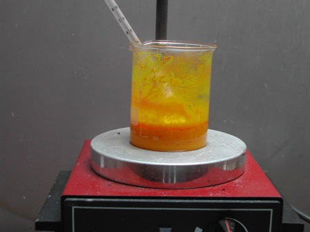
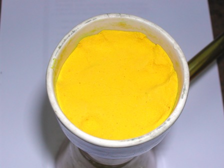
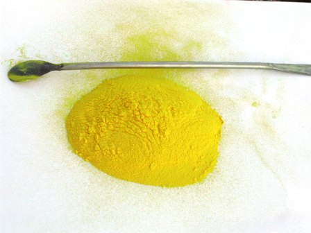

Ed eccoci al successivo intermedio della serie in programma, che è partita dal clorobenzene per arrivare a...
Oggi verranno attaccati (mi si perdoni il linguaggio volutamente ruspante) altri due gruppi nitrici -NO2 all'anello benzenico che ne è privo della N-(2,4-dinitrofenil)-fenilammina preparata la volta scorsa, per far diventare la molecola simmetrica secondo la reazione seguente:

Anche questa nitrazione è facile e favorita, non occorrono condizioni drastiche nè miscela solfonitrica, basta solo un acido di media concentrazione e temperature sotto i 100 gradi.
Ringrazio l'amico M. che mi ha suggerito il procedimento (vi era un'altra alternativa ma ho preferito questa) e al quale avevo promesso che avrei prima o poi replicato la sintesi; aggiungo di mio quegli accorgimenti personali che ogni chimico sperimentale adotta durante lo svolgimento dell'esperienza quando lo ritiene opportuno.
Materiale occorrente:
- N-(2,4-dinitrofenil)-fenilammina
- acido nitrico 56%
- vetreria opportuna
-Porre in un becher da 250 ml 45 ml di acido nitrico concentrato (d. 1.4) e diluirlo con 8 ml di acqua; l'acido così preparato avrà una concentrazione di circa il 56%.
Si pone la miscela nitrante così preparata su agitatore magnetico e si scalda a circa 50°; raggiunta questa temperatura si comincia ad aggiungere a piccole porzioni 8 g di 2,4-(dinitro)difenilammina agitando ogni volta vigorosamente.
Si nota che il reagente a mano a mano introdotto vira abbastanza velocemente dal rosso al giallo e quando è completamente giallo si aggiunge la porzione successiva. Essendo il prodotto molto leggero le aggiunte sono comunque numerose.

Dopo alcune aggiunte l'agitazione magnetica non basta più perchè la miscela diventa via via più viscosa ed occorre aiutare l'ancoretta magnetica mescolando la pastella anche a mano, magari con l'aiuto del solito termometro maneggiato cautamente e che ci permette di tenere la temperatura sotto perfetto controllo.
Durante questa prima fase non ho notato liberazione di ossidi d'azoto.
Terminate le aggiunte aumentare la temperatura scaldando su piastra a 80-90°; raggiunta questa temperatura non serve più agitare a mano perchè la massa sarà ritornata fluida e l'agitazione magnetica sarà di nuovo efficiente.
Con il controllo accurato delle temperature non si ha durante tutta la nitrazione che una minima emissione di ossidi d'azoto e la stessa procede nella massima tranquillità.
Lasciare a 85-90° per circa due ore, mantenendo sempre una buona agitazione e la temperatura costante.
Dopo il tempo stabilito lasciar raffreddare e aggiungere 100 ml di acqua, la quale produce immediata separazione del tetranitroderivato.
Si procede ora alla filtrazione su buchner, lavando ripetutamente il solido giallo con numerose piccole porzioni di acqua fredda per eliminare tutta l'acidità.
Il liquido filtrato deve passare alla fine a pH praticamente neutro.

Staccare dal filtro ed essicare all'aria la polvere microcristallina di color giallo.
La tonalità verdastra dell'immagine finale è dovuto alla fotografia fatta con la mediocre luce che c'era, la sostanza è perfettamente gialla.

Ho ottenuto 9,5 g di 2,2',4,4'-tetranitrodifenilammina, con una buona resa dell'88%.
La resa si riferisce naturalmente al prodotto ottenuto supposto puro; non lo sarà al 100% ma in ogni caso rispondente agli scopi che mi sono prefisso.
Non ho quindi ritenuto necessario ricristallizzare perchè la prossima volta il prodotto subirà un ulteriore (robusto!) trattamento e l'ultimo prodotto della saga dovrebbe alla fine farsi finalmente vedere.